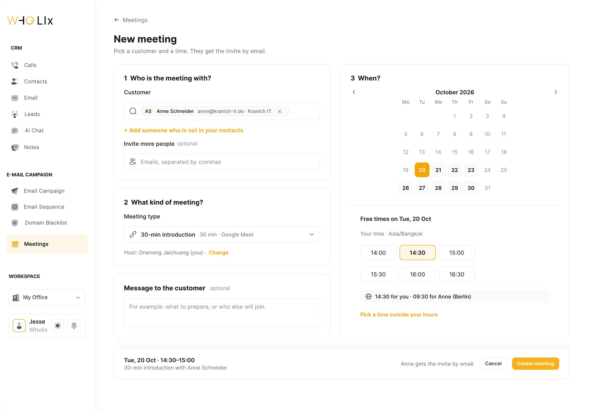
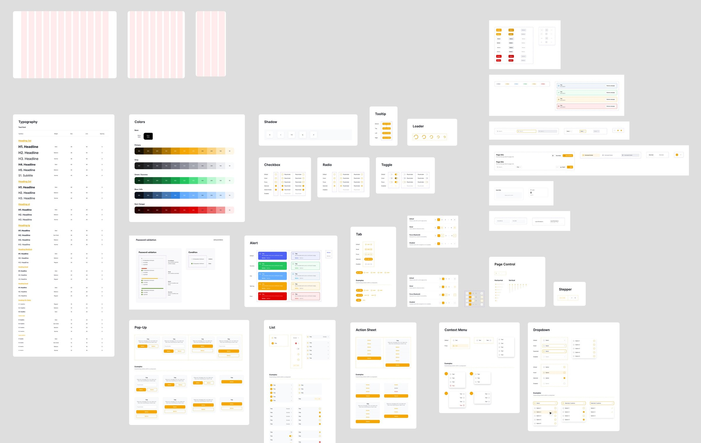
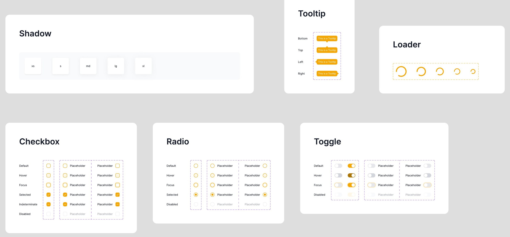
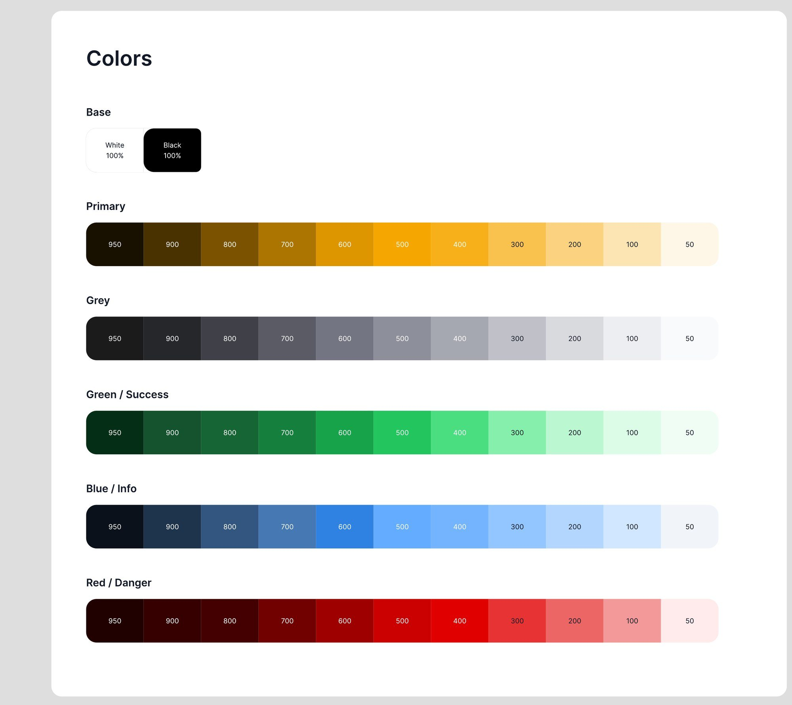
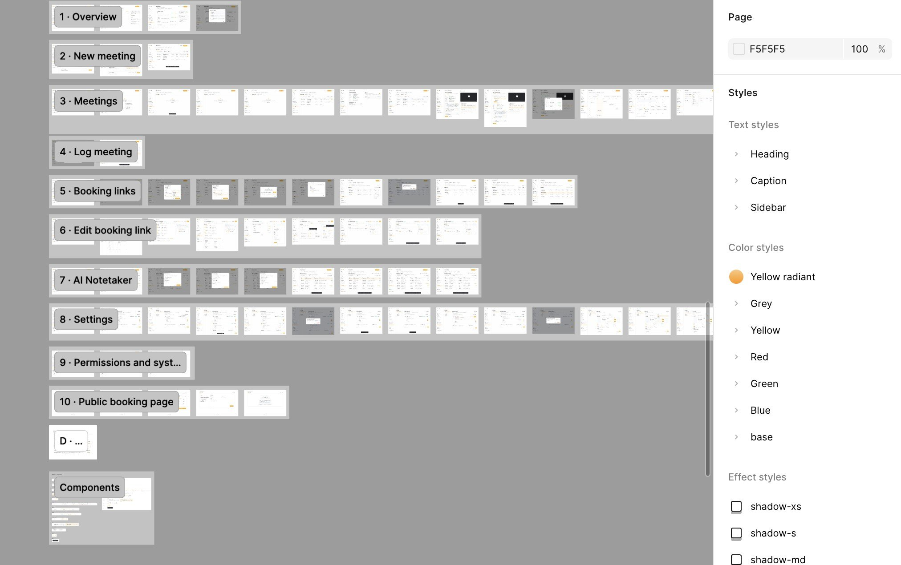
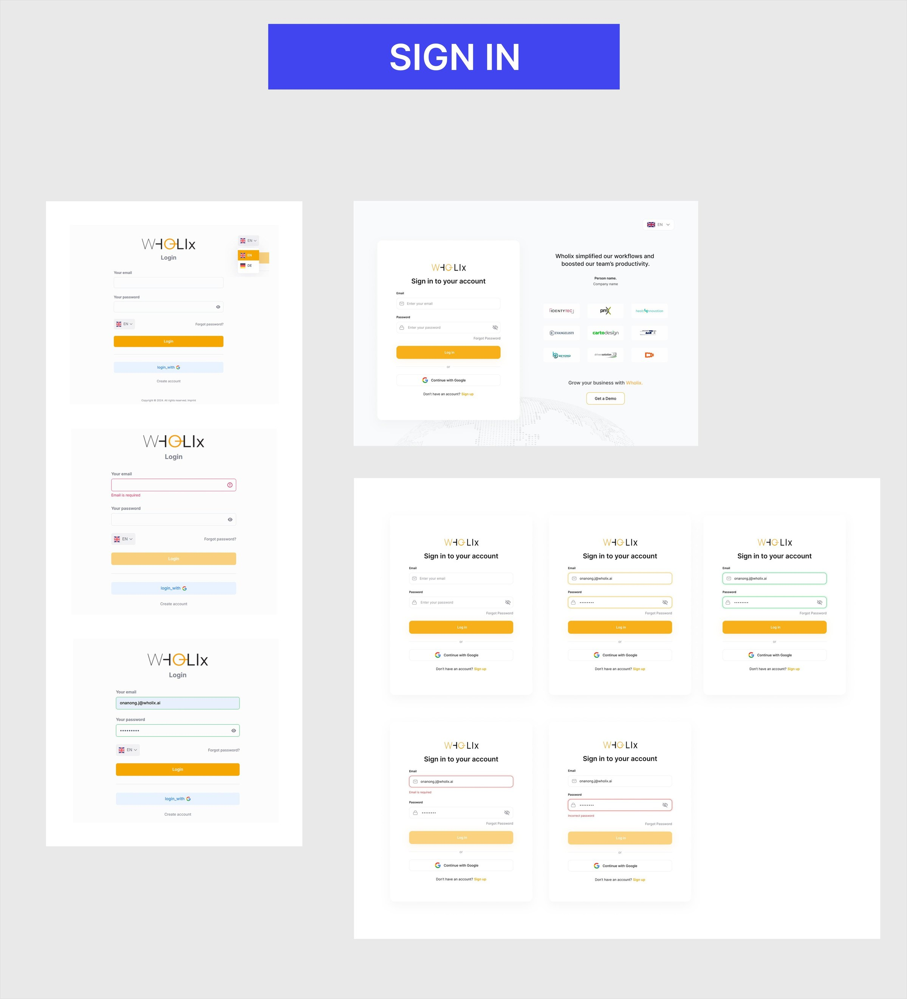

01WHOLIX
Wholix: an AI-powered CRM that makes sales work easier
An AI-powered CRM that makes everyday sales work easier for businesses, from finding new customers to following up, so teams spend less time on admin and more time with people.
Some screens are left out or use sample data to respect a confidentiality agreement.
- Company
- WHOLIX
- My role
- Product Designer, end to end
- Timeline
- Mar 2026 to present
- Platform
- Desktop
Overview
Wholix is a B2B sales platform that automates lead research, cold outreach, follow-ups and CRM work, so sales teams spend more time in real conversations. It is available in German, English and Thai. I am the only product designer, working with the CEO and the dev team. The product is live and still evolving.
The problem
Wholix was initially developed in Germany without a dedicated UX/UI designer, which resulted in an inconsistent interface and usability challenges. As the company expanded into the Thai market, there was a growing need to improve the overall user experience, simplify complex workflows, and adapt the product to better support how local businesses manage their sales activities.
Target users and their challenges
The primary users were business owners, managing directors, and founders, mostly at mid-sized companies without dedicated sales teams. They were responsible for finding potential customers, researching leads, and closing deals themselves.
Without automation, these tasks were largely manual. They had to find prospects, research companies, and write individual sales emails, which was time-consuming and made it difficult to manage their sales activities efficiently.
User research and product discovery
I gathered product knowledge, business requirements, and product insights directly from the CEO to understand the product vision and target users. I also reviewed the existing system and gained further insights into users’ daily workflows and challenges through user conversations.
Process
There was no documentation, no design guideline, a short timeline and a small dev team. I audited the old system and its flows, used AI to research each feature and draft the information architecture, then agreed with the CEO which modules to fix first. Each one was rebuilt from scratch: AI Cold Outreach, CRM, Inbox and Meet.
Key decision: outreach first
AI Cold Outreach is the selling point: AI finds the right contacts and writes a personal email to each one, so it got the most work. The old setup flow was long and easy to get lost in. I rebuilt it as four clear steps with fewer clicks, so users can launch a campaign on their own. In step 3, shown at the top of this page, users set tone, address and call to action with simple choices.
Meet
Meetings stay inside the CRM. Customers book through a link, AI Notetaker records the call, and the summary, next steps and transcript are saved to the contact.

The solution
One sidebar and one visual language connect every module. AI sits inside the workflow, not in a separate tool, and empty states always show a clear first step.
Other modules I designed
- CRM: contacts and a drag and drop sales pipeline, from new lead to demo, proposal and won.
- Inbox: one unified inbox with clear folders and views, kept simple because users spend most of their day in email.
- AI calling: calls built around one lead at a time, with a short AI summary before the call and quick logging during it.
Design system
I built the Wholix design system in Figma: a type scale, color scales with semantic colors, light and dark themes, shadows, and components that show every state, from default and hover to focus, selected and disabled. Screens for each module sit in numbered flows that share the same text, color and effect styles.




Landing page
I redesigned the marketing site to be easier to read and more modern, keeping the original brand, copy and product visuals. The hero states the outcome in one line, an animated card walks through the product in four steps, and every section leads back to one main action, Get started.
Sign in redesign
The old login had two language menus, a raw text key on the Google button and a hidden sign up link. I rebuilt it as one clear card with one main action, and used the other half for customer proof and a demo offer.

Working with developers
I hand off work by preparing developer handoff files for each feature, with the final screens, states and flows in one place, so developers can build from a single clear source. The design system gives them ready-made components, which keeps what ships close to the design.
Outcome
Wholix is live and used by nearly 100 companies, according to wholix.ai. The team tracks daily active customers to decide what to improve next, and the product keeps evolving.
What I would do differently
Write documentation before designing. Most decisions lived in conversations and in Figma, so there was no single place to check why a screen works the way it does. Now I start each module with a short spec: who uses it, the main tasks, the data and the edge cases. I also learned that when AI writes part of the work, people need to see it and change it easily, so I design for trust as much as for speed.